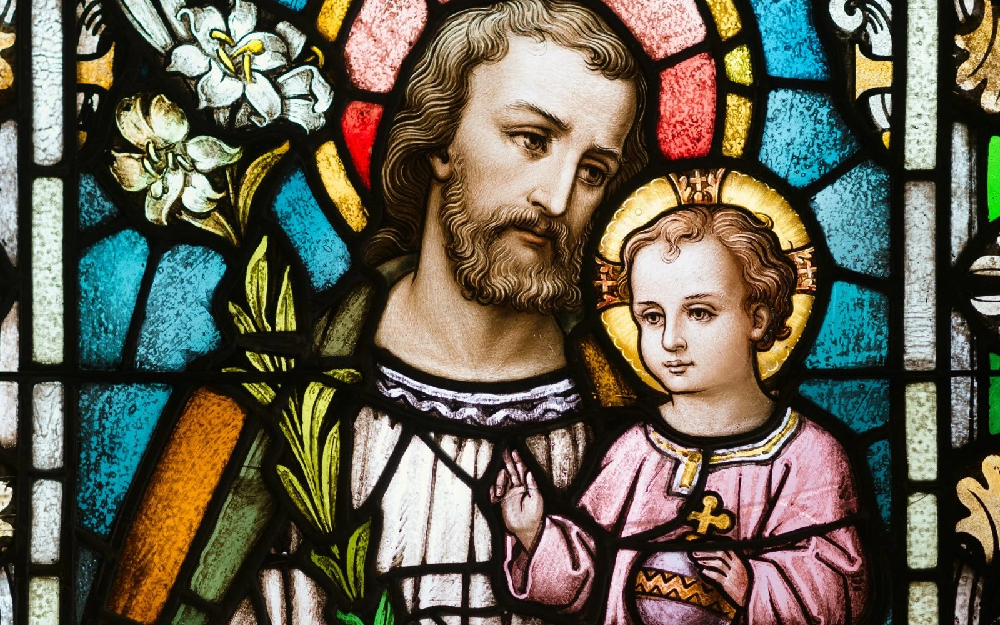

Artículos Formativos
¿Es correcto aplaudir en misa?
Esto dijó Benedicto XVI
Parece un gesto natural, pero el Papa Benedicto nos ofrece una respuesta clara sobre sus efectos en la liturgia.
Seguir leyendo
Marzo
El mes dedicado a San José
Un santo que nos enseña a vivir en el silencio, la humildad y la obediencia a Dios, con una fe firme.
Seguir leyendo
Semana Santa 2026
¿Estás listo?
Días santos para recordar el amor de Cristo en la cruz y renovar nuestra fe con oración, reflexión y conversión.
Seguir leyendo